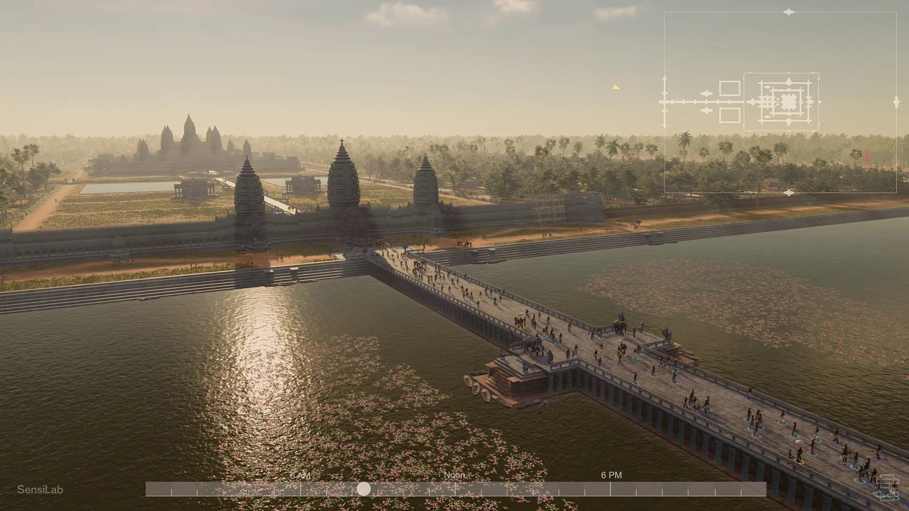
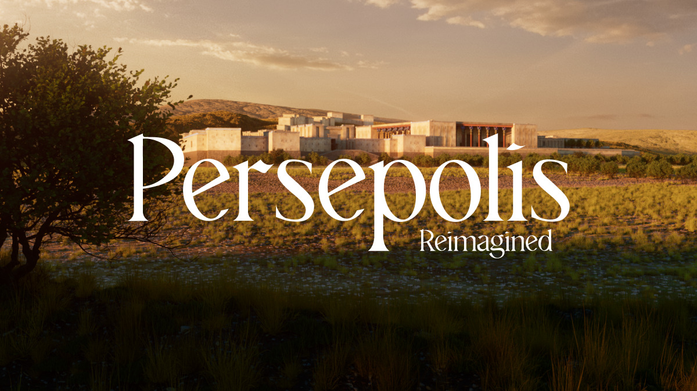
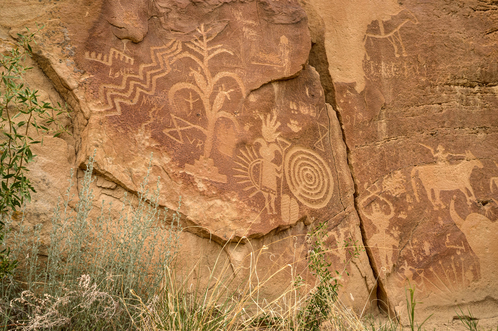
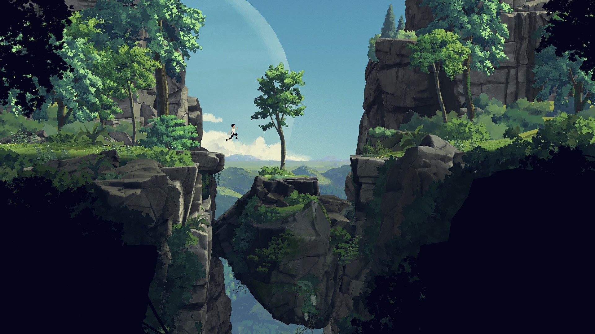
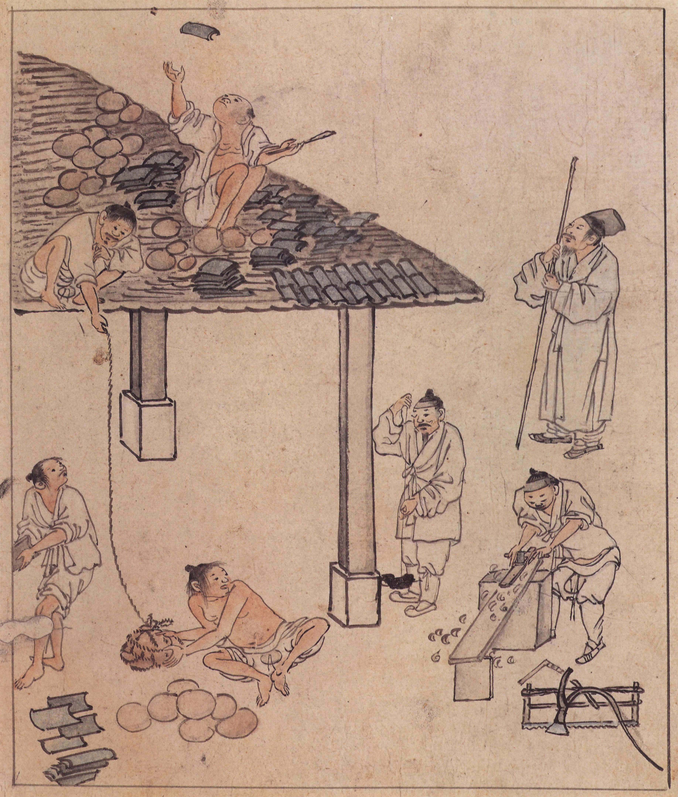
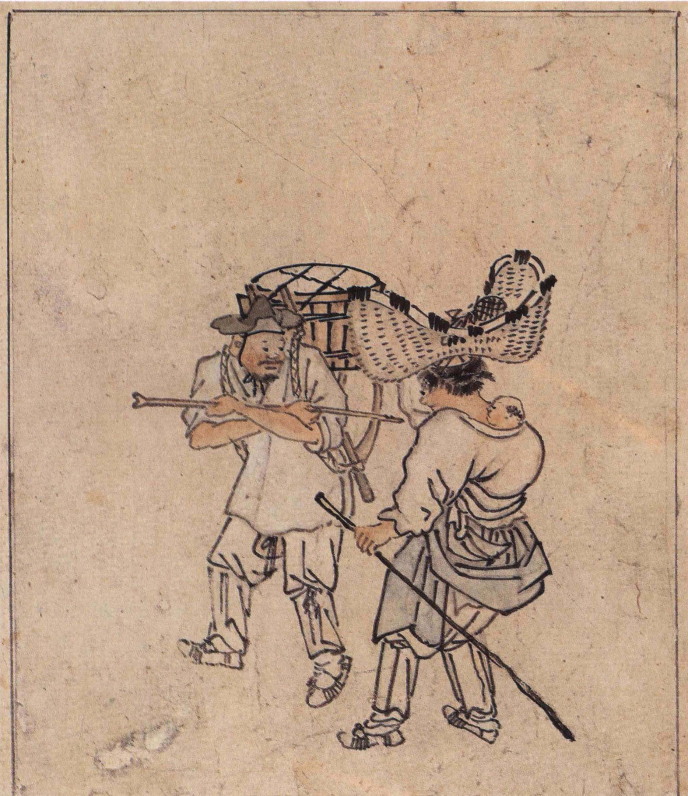
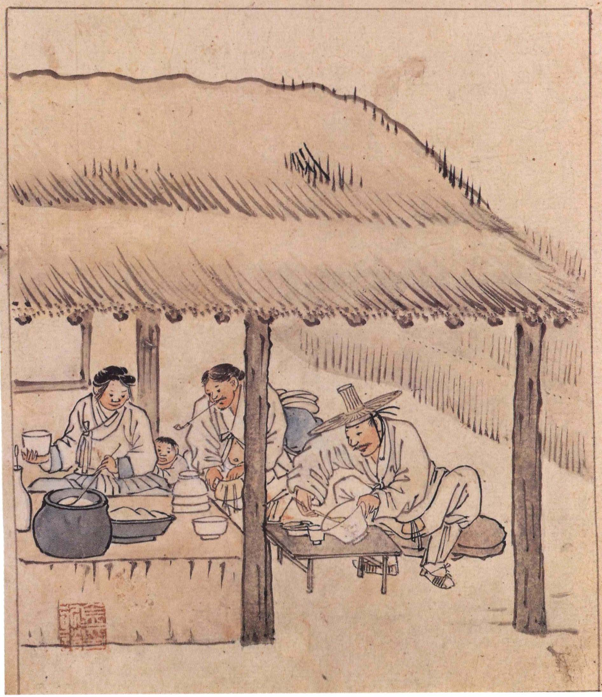
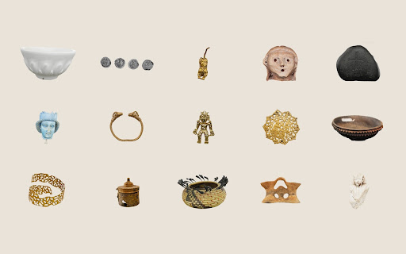

KoPubWorld 바탕 Light
돌에 새긴 선,
풍경이 되다
제목 · 이야기 · 인물의 대사
03 · REFERENCE & MOOD

마을의 길·물길·집과 사람 배치
Monash SensiLab 외 공동 연구팀

스크롤에 따라 이어지는 공간과 장면
Getty · Media.Monks · 2022

3D 표면의 무늬 강조와 해설
CyArk Tapestry · BLM · 2024

넓은 풍경 속 인물의 비례와 거리감
Wishfully · Thunderful · 2023

건축 부재·작업 도구와 인물의 비례
『풍속도 화첩』 · 국립중앙박물관
Wikimedia Commons · Public Domain

장사꾼의 옷차림·짐과 소품
『풍속도 화첩』 · 국립중앙박물관
Wikimedia Commons · Public Domain

찬모의 손동작·그릇과 부엌 배치
『풍속도 화첩』 · 국립중앙박물관
Wikimedia Commons · Public Domain

Index의 회전·확대와 해설 배치
Google Arts & Culture Lab
Lex Fefegha · 2026
유물의 형태가 잘 보이도록 밝은 바탕과 차분한 색을 골랐습니다.
KoPubWorld 바탕 Light
돌에 새긴 선,
풍경이 되다
제목 · 이야기 · 인물의 대사
KoPubWorld 돋움 Light
봉황동 석사자
갈기 · 수염 · 무늬 · 이목구비 · 눈매
메뉴 · 수치 · 짧은 안내
장면과 유물은 넓게 보여주고, 메뉴와 설명은 간결하게 배치했습니다.
눈매와 표면의 선에 담긴
닮은 점과 다른 점